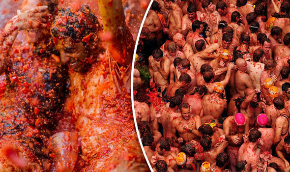

How did La Tomatina Start
The tomato fight has been a strong tradition in Bunol since 1944 or 1945. No one is completely certain how this event originated. Possible theories on how the Tomatina began include a local food fight among friends, a juvenile class war, a volley of tomatoes from bystanders at a carnival parade, a practical joke on a bad musician, and the anarchic aftermath of an accidental lorry spillage.
One popular theory is that disgruntled townspeople attacked city councilmen with tomatoes during a town celebration. Whatever happened to begin the tradition, it was enjoyed so much that it was repeated the next year, and the year after that, and so on. The holiday was banned during the Spanish State period under Francisco Franco for having no religious significance, but returned in the 1970s after his demise.
The festival is in honor of the town's patron saints, Luis Bertran and the Mare de Deu dels Desemparats (Mother of God of the Defenseless), a title of the Virgin Mary...

What Happens at La Tomatina
At around 11am many trucks haul the bounty of tomatoes into the centre of the town, Plaza del Pueblo. The tomatoes come from Extremadura, where they are less expensive. Technically the festival does not begin until one brave soul has climbed to the top of a two-story high, greased-up wooden pole and reached the coveted ham at the top. In practice this process takes a long time and the festival starts despite no one reaching the meaty prize. The signal for the beginning of the fight is firing of water cannons, and the chaos begins. Once it begins, the battle is generally every man for himself.
After an one hour the fighting ends. At this point, no more tomatoes can be thrown. The cleaning process involves the use of fire trucks to spray down the streets, with water provided from a Roman aqueduct. The authorities seem more concerned with cleaning the town than cleaning the visitors, so some people find water at the Bunol River to wash themselves, although some kind residents will hose passers-by down. Once the tomato pulp is flushed, the ground is clean due to the acidity of the tomato.

La Tomatina festival: World's messiest food fight with TOMATOES kicks off in Spain
SOME 22,000 people hurled tomatoes at each other in the world’s messiest food fight today – the Tomatina festival in Spain.Around 165 tons of the fruit were thrown, squished and splatted in an hour of fun in the annual event in the small town of Bunol.
Five thousand locals and 17,000 tourists gathered at the town, 25 miles west of Valencia, for the festival, which takes place on the last Wednesday of August.
The tomatoes, which cost €36,000 (£33,300), were brought to the town in six large lorries - then into the main square, the Plaza Layana, in a smaller truck.Revellers come from around the world to take part - many sporting swimming goggles to protect their eyes.
The town hall in Bunol has urged festival goers not to use the party as an excuse for bulling or sexist behaviour.
Mayor Rafael Perez said organisers conscious that “in the Tomatina there is a fine line between what is bullying and what is not”.Security was stepped up this year amid fears of the potential risk of a terrorist attack, with 700 police, firefighters, paramedics and volunteers working to ensure safety.
Police cordons and bollards were in place to prevent an attack.
The mayor said that following the attacks in Barcelona and Cambrils which killed 16 people earlier this month, the security at the festival was “very good and capable of resolving any problem.”
.jpg)
Tips for Attending La Tomatina
The most important thing to bring to La Tomatina is a change of clothes, which you can either leave in the coach of the tour company you came with or you could carry in waterproof bag (many residents spray the festival goers with waterhoses from the vantage point of their balconies!).
Many festival goers choose to wear goggles, although there is no need to buy them in advance as they are available for 2 euros in kiosks all around Bunol.
It's best to wear old trainers over flip flops or sandals as the latter are easily lost in a crush, or you can have your feet stomped on!
Expensive camera equipment is a big no-no! If you want to take photos get a disposable water proof camera, or a small pocket camera coated in clingfilm (for waterproofing) is also possible.
It's best to get there early and get down into the centre of the action as soon as possible if you want to see the pole-climb at the start. Also the majority of tomatoes are dumped in the centre and so if you really want to be bathed in red juice and not just lightly speckled you should hustle for a good place.
Drinking before the festival is part of the fun, but be warned. Long before the tomatoes arrive you'll be wedged into position until 12pm when the fight is called to a halt... in other words there's no chance to nip off to the toilet, so be careful before you fill your bladder!

Getting to La Tomatina Festival
So the all important question: how to get to La Tomatina? Well the festival takes place in Bunol (Bunyol), a small town of 9,000 inhabitants about 38km outside Valencia. Many festival-goers choose to stay in Valencia the night before as there is not much accommodation in Bunol itself, and from there it's easy to get the train into Bunol (the first leaves at 7am, and it's worth going earlier to be sure of fitting on board and getting a good spot for the fight!).
From Barcelona you can either make your way to Valencia the day before by train (journey time 3.5 hours, tickets 25-50 euros each way - book via Renfe) or by bus (4.5 hours around 20 euros) and stay the night there, before making your way to Bunol the next day.
By far the easiest - and surprisingly economic option - is to go with a tour company. A number of tour companies organise a coach ride to the festival (usually leaving Barcelona city centre around 4am and getting you to Bunol for 8/9am with plenty of time to have a drink or two and get in position). Apart from requiring no brain power on your part, it can be cheaper than travelling by public transport - especially as there's no need to fork out for a night's accommodation in Valencia